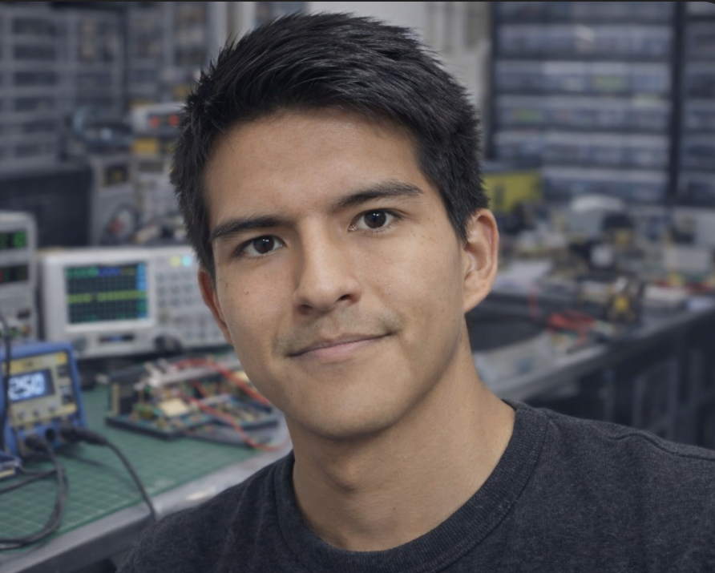
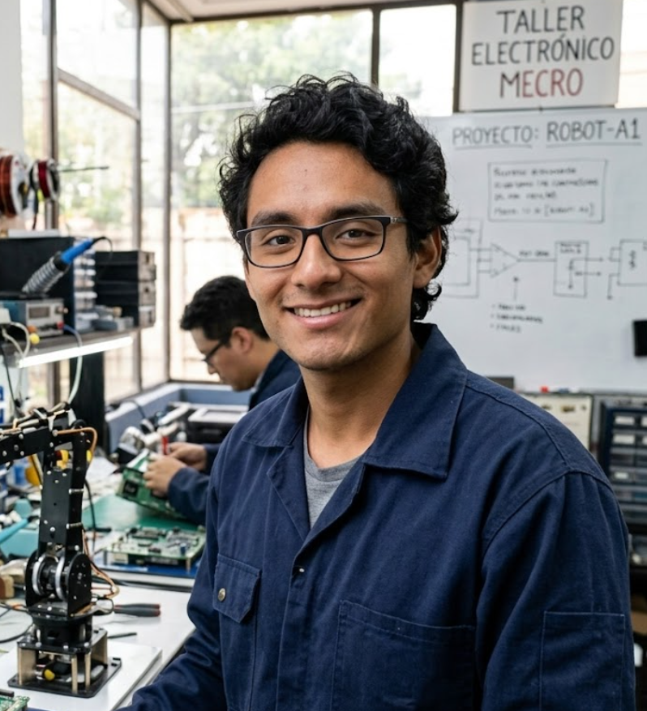

Gerard Quispe
Fundador · Dirección de ingeniería
Lidera el desarrollo de sistemas de vuelo y telemetría, con enfoque en aeronáutica, control PID/Kalman, sistemas embebidos y arquitectura de hardware.
MECRO es un laboratorio de investigación y desarrollo y una academia de hardware aeroespacial. Trabajamos desde Lima, Perú, conectando la formación técnica con el desarrollo de prototipos.
Nos interesan las preguntas que aparecen al construir: cómo medir una señal, cómo estabilizar un sistema y cómo convertir un diseño en hardware.
Ese enfoque une nuestros proyectos y programas de formación en sistemas embebidos, control, UAV y cohetería experimental.
Explorar nuestras líneas de I+D

Fundador · Dirección de ingeniería
Lidera el desarrollo de sistemas de vuelo y telemetría, con enfoque en aeronáutica, control PID/Kalman, sistemas embebidos y arquitectura de hardware.

Socio · Operaciones y estrategia comercial
Coordina la estrategia comercial, la experiencia formativa y la logística de los kits de desarrollo MECRO.
Conversemos sobre formación, hardware o tu siguiente proyecto tecnológico.